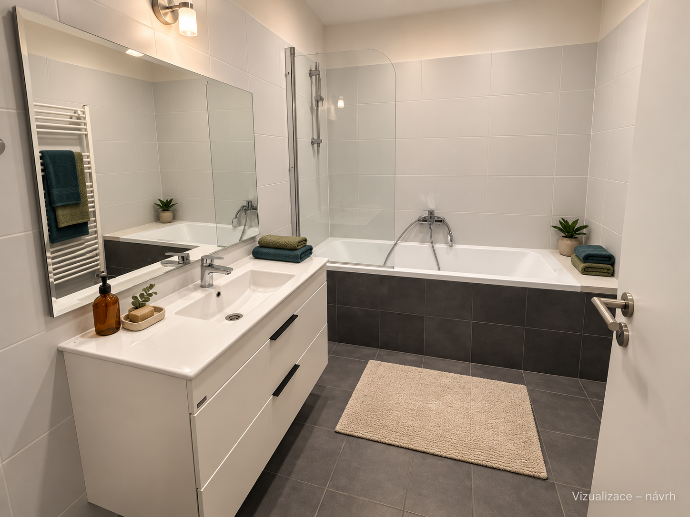
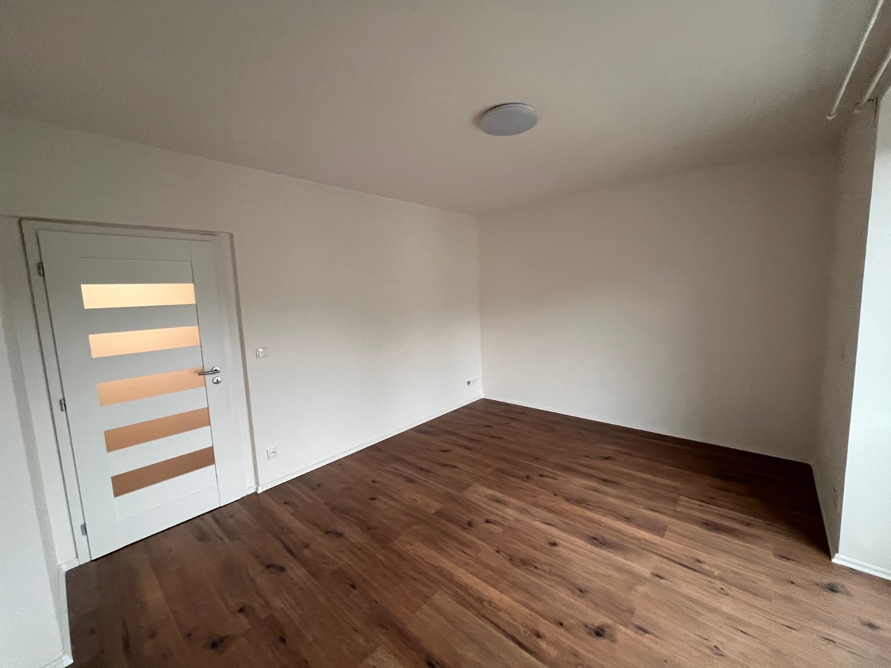
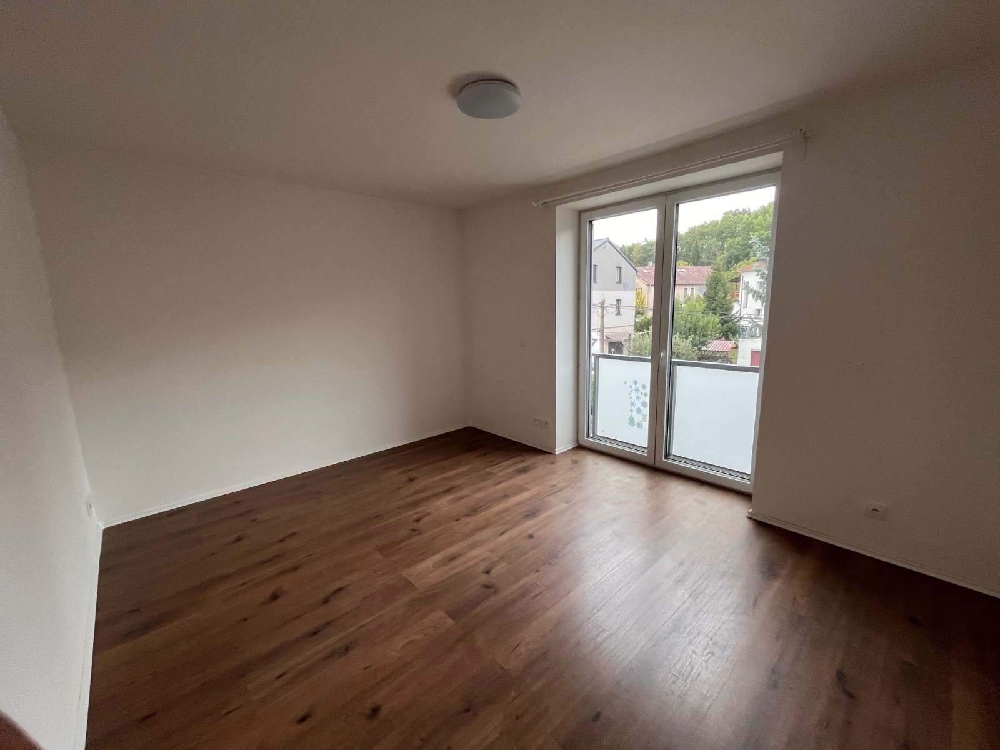
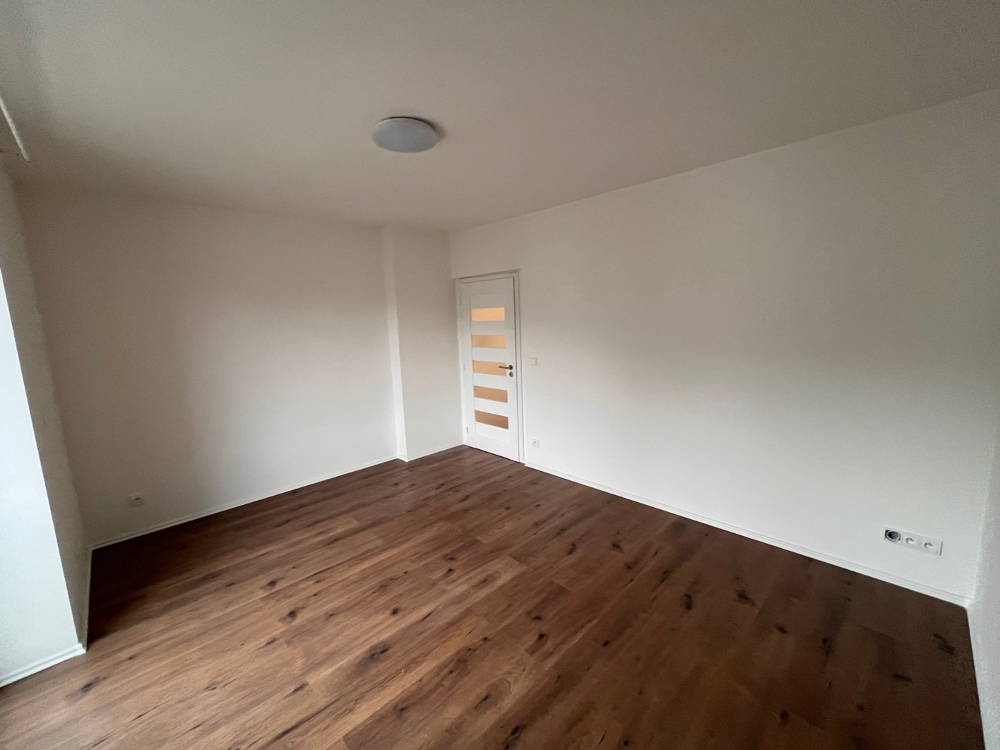

Dva byty.
Dva útulné interiéry.
Šest pohledů v odlišných, vzájemně sladěných stylech. Prohlédněte si návrhy vedle původních fotografií a dodaného půdorysu.
Byt 1 · obývák a nová kuchyň
Terakota · dub · slonová kost


Nová kuchyň a objem koupelny mění zadní část současné místnosti. Jde o prostorový a materiálový návrh; přesné rozměry a zkosení příčky vyžadují kontrolu projektantem.
Porovnat s půdorysem
Otevřít původní PDF
Byt 1 · ložnice a pracovna
Útulná ložnice s pracovním místem


Schválený styl doplněný o rozsvícené stropní svítidlo.
Porovnat s půdorysem
Otevřít původní PDFByt 1 · nová koupelna
Pískové tóny · terakota · dub

Nová koupelna dosud neexistuje. Návrh vychází z půdorysu: sprcha, WC, bidet a umyvadlo. Materiály a detaily jsou navržené; rozměry a realizovatelnost nejsou ověřené.
Porovnat s půdorysem
Otevřít původní PDFByt 2 · obývák a kuchyň
Petrolejová · olivová · dub


Návrh kuchyňské linky, jídelny pro čtyři a obývací části v současném prostoru. Okno je v tomto pohledu za kamerou.
Porovnat s půdorysem
Otevřít původní PDFByt 2 · ložnice
Petrolejová a olivová s akustickými lamelami


Schválený styl doplněný o rozsvícené stropní svítidlo.
Porovnat s půdorysem
Otevřít původní PDFByt 2 · stávající koupelna
Původní vybavení s jemnými doplňky


Zachována koncepce stávající koupelny: vana, zástěna, umyvadlová skříňka a obklady. Doplněno světlo, ručníky a drobné doplňky.
Porovnat s půdorysem
Otevřít původní PDFVšechny původní fotografie
Originály jsou zachované beze změny. Kliknutím otevřete plný soubor.
byt-1 · obyvak-kuchyn


byt-1 · loznice-pracovna

Fotografie 01
Fotografie 02 Fotografie 03Fotografie 04
Fotografie 03Fotografie 04 Fotografie 05
Fotografie 05
Fotografie 06 Fotografie 07
Fotografie 07byt-2 · obyvak-kuchyn


byt-2 · loznice


byt-2 · koupelna


Půdorys obou bytů
Stáhnout původní PDF